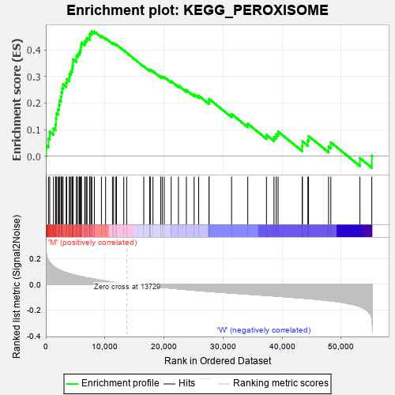
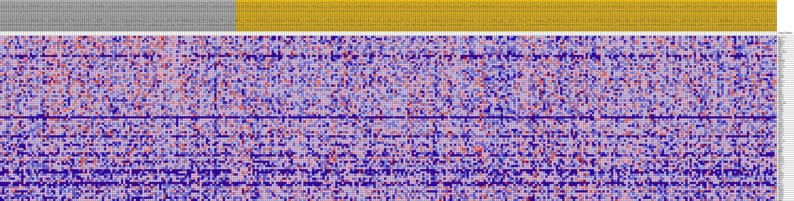
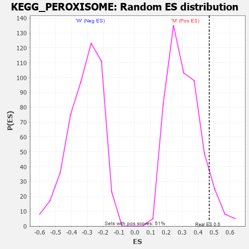

| Dataset | MUC16.MUC16.cls#M_versus_W.MUC16.cls#M_versus_W_repos |
| Phenotype | MUC16.cls#M_versus_W_repos |
| Upregulated in class | M |
| GeneSet | KEGG_PEROXISOME |
| Enrichment Score (ES) | 0.46938562 |
| Normalized Enrichment Score (NES) | 1.5184733 |
| Nominal p-value | 0.07647059 |
| FDR q-value | 0.18917651 |
| FWER p-Value | 0.739 |

| PROBE | DESCRIPTION (from dataset) | GENE SYMBOL | GENE_TITLE | RANK IN GENE LIST | RANK METRIC SCORE | RUNNING ES | CORE ENRICHMENT | |
|---|---|---|---|---|---|---|---|---|
| 1 | SLC27A2 | na | 68 | 0.242 | 0.0409 | Yes | ||
| 2 | PEX7 | na | 448 | 0.183 | 0.0661 | Yes | ||
| 3 | NUDT19 | na | 664 | 0.168 | 0.0916 | Yes | ||
| 4 | DHRS4 | na | 1295 | 0.138 | 0.1043 | Yes | ||
| 5 | AGPS | na | 1647 | 0.127 | 0.1201 | Yes | ||
| 6 | PEX2 | na | 1696 | 0.125 | 0.1412 | Yes | ||
| 7 | PEX11A | na | 1785 | 0.123 | 0.1610 | Yes | ||
| 8 | SLC25A17 | na | 2056 | 0.115 | 0.1762 | Yes | ||
| 9 | IDH1 | na | 2241 | 0.111 | 0.1922 | Yes | ||
| 10 | NOS2 | na | 2321 | 0.109 | 0.2098 | Yes | ||
| 11 | FAR2 | na | 2576 | 0.104 | 0.2234 | Yes | ||
| 12 | EHHADH | na | 2634 | 0.103 | 0.2403 | Yes | ||
| 13 | PEX14 | na | 2785 | 0.100 | 0.2551 | Yes | ||
| 14 | ACSL1 | na | 2920 | 0.098 | 0.2698 | Yes | ||
| 15 | PEX11B | na | 3447 | 0.090 | 0.2759 | Yes | ||
| 16 | IDH2 | na | 3537 | 0.088 | 0.2897 | Yes | ||
| 17 | HACL1 | na | 3984 | 0.082 | 0.2960 | Yes | ||
| 18 | PEX5 | na | 4009 | 0.082 | 0.3098 | Yes | ||
| 19 | ABCD4 | na | 4249 | 0.079 | 0.3192 | Yes | ||
| 20 | ABCD3 | na | 4443 | 0.076 | 0.3290 | Yes | ||
| 21 | MVK | na | 4533 | 0.075 | 0.3405 | Yes | ||
| 22 | NUDT12 | na | 4607 | 0.074 | 0.3520 | Yes | ||
| 23 | SCP2 | na | 4609 | 0.074 | 0.3649 | Yes | ||
| 24 | PRDX5 | na | 5178 | 0.067 | 0.3663 | Yes | ||
| 25 | CAT | na | 5179 | 0.067 | 0.3780 | Yes | ||
| 26 | SOD1 | na | 5456 | 0.064 | 0.3843 | Yes | ||
| 27 | ECH1 | na | 5681 | 0.062 | 0.3910 | Yes | ||
| 28 | PRDX1 | na | 5838 | 0.061 | 0.3988 | Yes | ||
| 29 | PEX10 | na | 5921 | 0.060 | 0.4077 | Yes | ||
| 30 | ACSL4 | na | 5949 | 0.059 | 0.4176 | Yes | ||
| 31 | SOD2 | na | 6028 | 0.058 | 0.4264 | Yes | ||
| 32 | HSD17B4 | na | 6583 | 0.053 | 0.4256 | Yes | ||
| 33 | GSTK1 | na | 6648 | 0.052 | 0.4335 | Yes | ||
| 34 | PECR | na | 6855 | 0.050 | 0.4385 | Yes | ||
| 35 | PXMP2 | na | 6975 | 0.049 | 0.4450 | Yes | ||
| 36 | ACSL3 | na | 7412 | 0.046 | 0.4451 | Yes | ||
| 37 | FAR1 | na | 7444 | 0.045 | 0.4525 | Yes | ||
| 38 | CRAT | na | 7463 | 0.045 | 0.4600 | Yes | ||
| 39 | HAO1 | na | 7713 | 0.043 | 0.4631 | Yes | ||
| 40 | ACOX1 | na | 7782 | 0.043 | 0.4694 | Yes | ||
| 41 | ACAA1 | na | 8210 | 0.039 | 0.4685 | No | ||
| 42 | PHYH | na | 9412 | 0.029 | 0.4519 | No | ||
| 43 | ABCD1 | na | 10120 | 0.024 | 0.4432 | No | ||
| 44 | PEX19 | na | 11283 | 0.016 | 0.4249 | No | ||
| 45 | PEX13 | na | 11472 | 0.014 | 0.4240 | No | ||
| 46 | EPHX2 | na | 11867 | 0.012 | 0.4190 | No | ||
| 47 | PEX26 | na | 11964 | 0.011 | 0.4192 | No | ||
| 48 | HAO2 | na | 13198 | 0.003 | 0.3974 | No | ||
| 49 | PAOX | na | 13684 | 0.000 | 0.3887 | No | ||
| 50 | PEX11G | na | 16574 | -0.008 | 0.3378 | No | ||
| 51 | PEX3 | na | 17595 | -0.013 | 0.3216 | No | ||
| 52 | XDH | na | 17630 | -0.014 | 0.3234 | No | ||
| 53 | ACOX3 | na | 17662 | -0.014 | 0.3252 | No | ||
| 54 | PMVK | na | 18139 | -0.016 | 0.3195 | No | ||
| 55 | HMGCL | na | 19444 | -0.023 | 0.2998 | No | ||
| 56 | DDO | na | 19704 | -0.024 | 0.2992 | No | ||
| 57 | AGXT | na | 20045 | -0.025 | 0.2975 | No | ||
| 58 | MLYCD | na | 21218 | -0.031 | 0.2816 | No | ||
| 59 | GNPAT | na | 22448 | -0.036 | 0.2656 | No | ||
| 60 | MPV17L | na | 23793 | -0.041 | 0.2485 | No | ||
| 61 | ACSL5 | na | 25101 | -0.047 | 0.2330 | No | ||
| 62 | PEX1 | na | 25874 | -0.049 | 0.2276 | No | ||
| 63 | PEX12 | na | 27613 | -0.056 | 0.2059 | No | ||
| 64 | DAO | na | 27632 | -0.056 | 0.2153 | No | ||
| 65 | PIPOX | na | 31439 | -0.068 | 0.1583 | No | ||
| 66 | AMACR | na | 34183 | -0.077 | 0.1221 | No | ||
| 67 | PEX16 | na | 37347 | -0.087 | 0.0799 | No | ||
| 68 | PEX6 | na | 38620 | -0.091 | 0.0727 | No | ||
| 69 | ECI2 | na | 38996 | -0.092 | 0.0820 | No | ||
| 70 | BAAT | na | 39313 | -0.093 | 0.0926 | No | ||
| 71 | ACSL6 | na | 43389 | -0.108 | 0.0375 | No | ||
| 72 | MPV17 | na | 43438 | -0.108 | 0.0555 | No | ||
| 73 | PXMP4 | na | 44352 | -0.111 | 0.0583 | No | ||
| 74 | ABCD2 | na | 44469 | -0.111 | 0.0756 | No | ||
| 75 | ACOT8 | na | 47852 | -0.127 | 0.0365 | No | ||
| 76 | DECR2 | na | 48240 | -0.129 | 0.0519 | No | ||
| 77 | ACOX2 | na | 53167 | -0.173 | -0.0072 | No | ||
| 78 | CROT | na | 55173 | -0.259 | 0.0017 | No |

